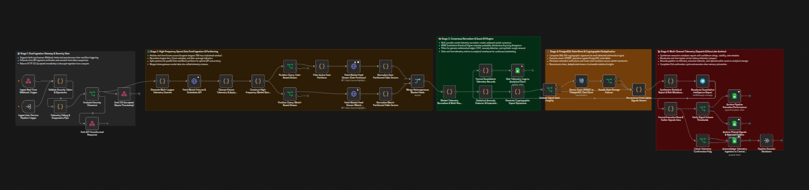

1. Produkcyjny Potok Danych i Integracji Wielosystemowej (n8n: Scenariusz #2 Analityk)
REST API • PostgreSQL • Google Sheets
37 Węzłów
Logika scenariusza #2
HTTP 202
Asynchroniczny ACK
PostgreSQL
Deduplikacja & UPSERT
Multi-Sink
Sheets, PG & Telegram
Wyzwanie:
Pobieranie i transformowanie danych z zewnętrznych serwisów REST API, wymóg autoryzacji przychodzących webhooków, deduplikacja rekordów w bazie SQL oraz równoległe zasilanie arkuszy kalkulacyjnych i kanałów komunikacji.
Rozwiązanie:
Zaprojektowałem i wdrożyłem 37-węzłowy potok danych (widoczny na zrzucie ekranu): bramka autoryzacji (Auth OK? z kodem 401), natychmiastowa asynchroniczna odpowiedź ACK 202, zapytania HTTP Request z paginacją, węzły normalizacji struktur JSON w JavaScript (Code Node), deduplikacja rekordów z operacją UPSERT w PostgreSQL, równoległa telemetria w Google Sheets oraz formatowanie wiadomości i wysyłka przez bota Telegram. Potok stanowi centralny komponent 6-scenariuszowego ekosystemu współpracującego z monitorującym Error Handlerem (#3) i Healthcheckiem (#5).
Rezultat:
Czyste, znormalizowane dane bez duplikatów w bazie PostgreSQL, zautomatyzowane raportowanie w Google Sheets i Telegramie oraz zerowy wpływ opóźnień zewnętrznych API na stabilność systemu.
